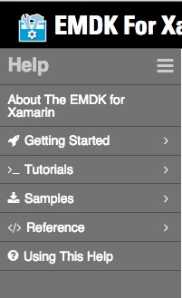

Overview
Welcome to the EMDK for Xamarin Technical Documentation. This help system allows you to browse the documentation on your local computer and features many tools for navigating and searching through the content.
Help Features
Table of Contents:
The menu on the left hand side of the page can be used to navigate through the varies documents contained inside this help application.

The documents are broken in to categories that can be drilled down to.

The menu icon will allow you to collapse and expand the "Table of Contents".

Search:
At the top of the page you will see a search box.

This box will search all documents in the system and highlight selected terms in the current document. You can switch between relevant documents buy selecting the document in "Search Results". You can minimize the "Search Results" by clicking on the "-" icon. You can bring the "Search Results back by click on the search bar.

At the bottom right hand side of the page you will see next and previous buttons that will allow you to move through the selected items.

After searching, if you browse to another page the search terms will automatically be used to bring you to the first found entry. Clearing the search results field will prevent this behavior.
In This Document:
In This document is a list of the main sections in the current document. When Selecting a link the document the document will scroll to the selected section, and show any sub sections.

Image Viewer:
When click on an image the image will open up at 100% in an in page pop up. If the image is bigger then your screen you will be able to scroll the image inside the pop up. If you click on the image in the pop up it will open in a new tab. Clicking the [X] in the pop up or clicking outside the pop up will close it.

External Links
When clicking on a link that is an external website, the url will be opened in a new tab of your browser.
Supported Web Browsers
- Firefox 29 or newer
- Google Chrome 35 or newer
- Internet Explore 9 or newer